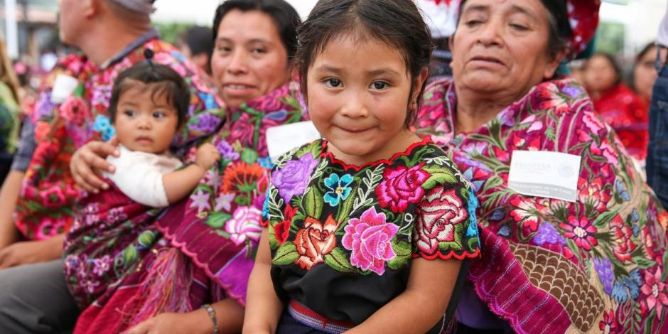
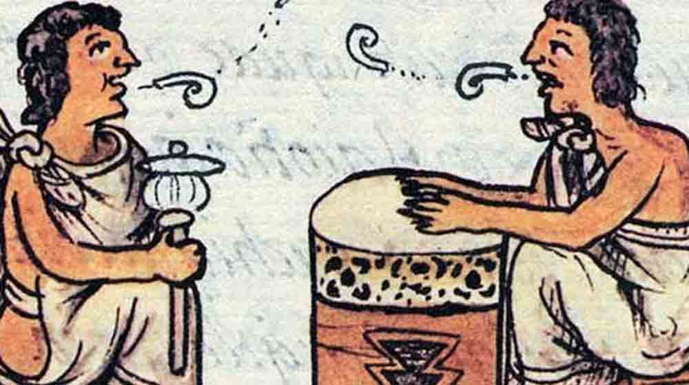

LENGUAJES DE PROGRAMACIÓN
Los 7 municipios mas bonitos de Chiapas
San cristobal de las Casas
Tapachula
Palenque
Ocosingo
Comitan de Dominguez
Ocozocoautla
Tuxtla GTZ
Poblacion existente de cada Municipio
San cristobal: 215,874
Tapachula: 271,141
Palenque: 132,265
Ocosingo: 234,661
Comitan de Dominguez: 166,178
Ocozocoautla: 97,397
Tuxtla GTZ: 604,147

Lenguas que hablan en cada lugar
San cristobal de las Casas
Tsotsil
Tapachula
Tapachulteco
Palenque
Cho'l
Ocosingo
Jach-t'aan
Comitan de Dominguez
Tojolabal
Ocozocoautla
Tsotsil
Tuxtla GTZ
...

Diseñado por Sergio Antonio Lara Gómez